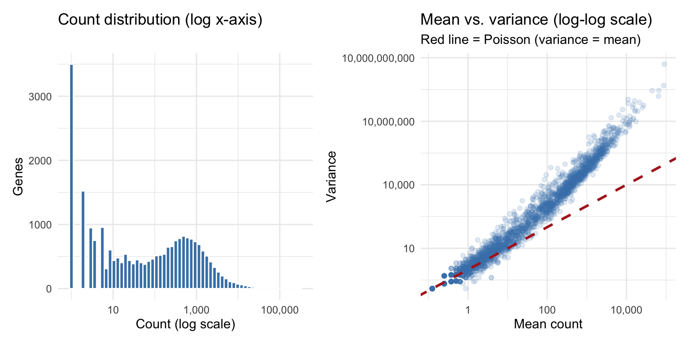
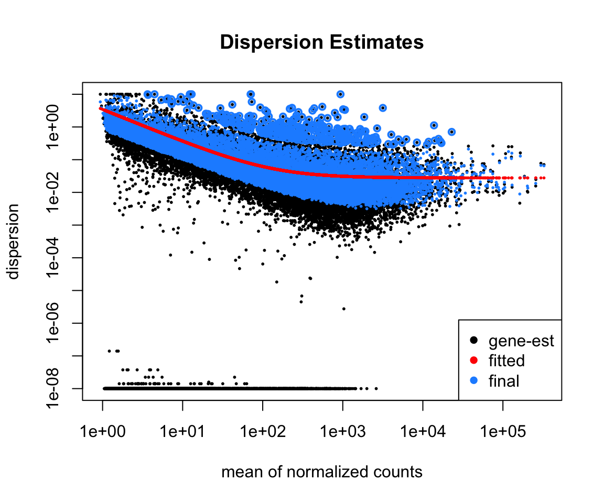
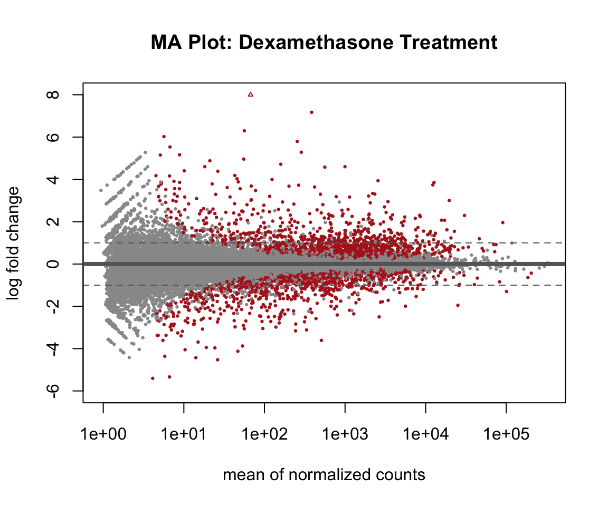
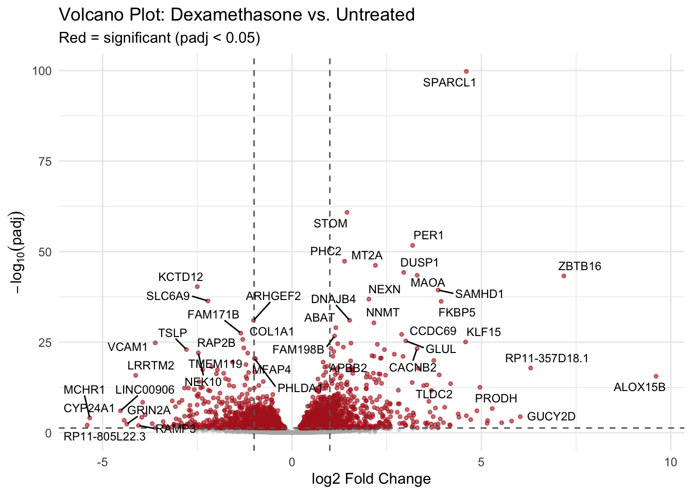
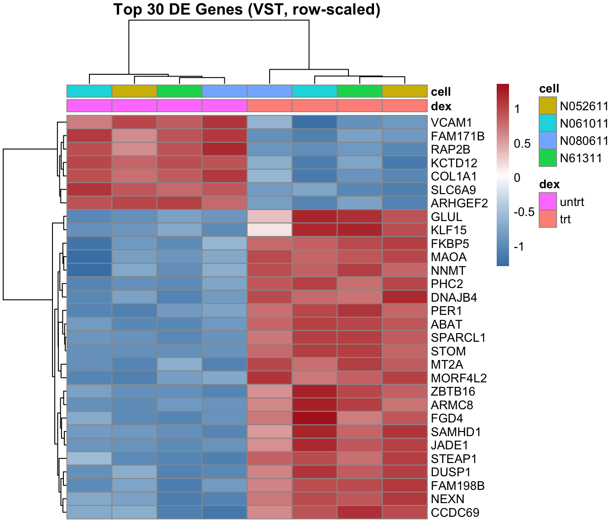
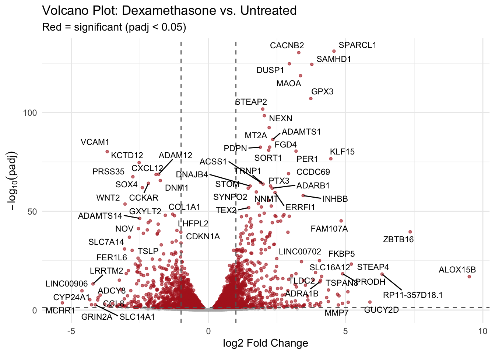

library(tidyverse)
library(this.path)
library(SummarizedExperiment)
library(DESeq2)
library(airway)
library(patchwork)
setwd(this.dir())
data(airway)Day 12: Differential Expression Analysis with DESeq2
SC INBRE Biostatistics Summer Intensive 2026
1 Overview
Yesterday we learned how genomics data is structured: count matrices, SummarizedExperiment objects, and quality assessment. Today we answer the scientific question that motivated the experiment:
Which genes change their expression between dexamethasone-treated and untreated airway smooth muscle cells?
This is called differential expression (DE) analysis. The core idea is simple: for each gene, test whether the mean count differs between groups. The challenge is doing this correctly for 20,000 genes simultaneously, with only a handful of replicates per group, on count data that violates the assumptions of a standard t-test.
We will use DESeq2, the current standard tool for RNA-seq differential expression. Three examples:
- Example 1: Building the DESeq2 model – data input, filtering, and setup.
- Example 2: Running the analysis and interpreting the results table.
- Example 3: Visualization – MA plots, volcano plots, and heatmaps.
We also show how to adjust for a covariate (cell line) in the design formula, connecting this directly to the confounding framework from Days 8–9.
2 Why Not a t-Test?
Before fitting anything, it is worth understanding why standard tools do not work on raw RNA-seq counts.
counts <- assay(airway)
# Pull counts for one gene across all 8 samples
gene1 <- counts["ENSG00000103196", ]
gene1SRR1039508 SRR1039509 SRR1039512 SRR1039513 SRR1039516 SRR1039517 SRR1039520
780 5764 1167 4211 887 3763 720
SRR1039521
5633 We have 4 treated and 4 untreated observations for this gene. A t-test would assume these 8 numbers are approximately normal with equal variance. Let us look at the count distribution across all genes in one sample to see whether that assumption holds:
p1 <- tibble(count = counts[, 1]) |>
filter(count > 0) |>
ggplot(aes(x = count)) +
geom_histogram(bins = 60, fill = "steelblue", color = "white") +
scale_x_log10(labels = scales::comma) +
labs(title = "Count distribution (log x-axis)",
x = "Count (log scale)", y = "Genes") +
theme_minimal()
# Mean-variance relationship across genes
gene_stats <- tibble(
mean_count = rowMeans(counts),
var_count = apply(counts, 1, var)
) |>
filter(mean_count > 0, var_count > 0)
p2 <- gene_stats |>
slice_sample(n = 3000) |> #Randomly sample 3000 rows (out of >33K)
ggplot(aes(x = mean_count, y = var_count)) +
geom_point(alpha = 0.15, color = "steelblue") +
geom_abline(slope = 1, intercept = 0,
color = "firebrick", linetype = "dashed", linewidth = 1) +
scale_x_log10(labels = scales::comma) +
scale_y_log10(labels = scales::comma) +
labs(title = "Mean vs. variance (log-log scale)",
subtitle = "Red line = Poisson (variance = mean)",
x = "Mean count", y = "Variance") +
theme_minimal()
p1 + p2
Two problems are immediately visible:
- Right-skewed counts. Even on a log scale, the distribution is far from normal.
- Variance grows with the mean. The variance is consistently above the red dashed line (which would be exact Poisson). This is called overdispersion, and it is the rule rather than the exception in RNA-seq data.
The appropriate model is the negative binomial distribution: \(\text{Var}(Y) = \mu + \alpha\mu^2\), where \(\alpha > 0\) is the dispersion parameter. DESeq2 estimates \(\alpha\) separately for each gene and uses it when testing for differential expression.
3 Example 1: Building the DESeq2 Model
3.1 Verifying Data Alignment
Before building the model, confirm that the count matrix and sample metadata are aligned. This is the same check we did in the Day 11 lab.
sample_info <- as.data.frame(colData(airway))
sample_info |> select(SampleName, cell, dex) SampleName cell dex
SRR1039508 GSM1275862 N61311 untrt
SRR1039509 GSM1275863 N61311 trt
SRR1039512 GSM1275866 N052611 untrt
SRR1039513 GSM1275867 N052611 trt
SRR1039516 GSM1275870 N080611 untrt
SRR1039517 GSM1275871 N080611 trt
SRR1039520 GSM1275874 N061011 untrt
SRR1039521 GSM1275875 N061011 trtidentical(colnames(counts), rownames(sample_info))[1] TRUE3.2 Building the DESeqDataSet
The DESeqDataSet bundles the count matrix, sample metadata, and experimental design into one object. The design formula tells DESeq2 which variable to test.
dds <- DESeqDataSetFromMatrix(
countData = counts,
colData = sample_info,
design = ~ dex # compare treated vs. untreated
)
ddsclass: DESeqDataSet
dim: 63677 8
metadata(1): version
assays(1): counts
rownames(63677): ENSG00000000003 ENSG00000000005 ... ENSG00000273492
ENSG00000273493
rowData names(0):
colnames(8): SRR1039508 SRR1039509 ... SRR1039520 SRR1039521
colData names(9): SampleName cell ... Sample BioSample3.3 Filtering Low-Count Genes
Genes with very few counts across all samples carry no information about differential expression. Including them wastes computational time and slightly increases the multiple testing burden. We keep only genes with at least 10 total reads across all samples.
keep <- rowSums(counts(dds)) >= 10
dds <- dds[keep, ]
cat("Genes before filtering:", nrow(counts), "\n")Genes before filtering: 63677 cat("Genes after filtering: ", nrow(dds), "\n")Genes after filtering: 22369 cat("Genes removed: ", nrow(counts) - nrow(dds), "\n")Genes removed: 41308 3.4 Setting the Reference Level
DESeq2 calculates fold changes as treated divided by the reference. We want the reference to be the untreated group so that a positive fold change means the gene went up after treatment.
dds$dex <- relevel(dds$dex, ref = "untrt")
levels(dds$dex)[1] "untrt" "trt" 4 Example 2: Running the Analysis and Interpreting Results
4.1 Running DESeq2
A single call to DESeq() performs the entire workflow:
- Estimates size factors (normalizes for sequencing depth).
- Estimates dispersion for every gene (borrowing strength across genes).
- Fits the negative binomial model for every gene.
- Runs a Wald test for the treatment effect.
deseq_dds <- DESeq(dds)4.2 Inspecting Size Factors
Size factors capture the sequencing depth of each sample. Samples with more reads get a larger size factor; DESeq2 divides raw counts by the size factor before comparing.
sizeFactors(deseq_dds)SRR1039508 SRR1039509 SRR1039512 SRR1039513 SRR1039516 SRR1039517 SRR1039520
1.0236476 0.8961327 1.1795171 0.6700291 1.1776714 1.3990527 0.9208046
SRR1039521
0.9445520 Samples range from roughly 0.7 to 1.3. If one sample had a size factor of 5 (five times the typical depth), that would be a sign of a badly outlying library and worth investigating.
4.3 The Dispersion Plot
DESeq2 estimates a dispersion parameter for every gene. With only 8 samples, per-gene estimates are noisy. DESeq2 stabilizes them by shrinking each estimate toward a trend fitted across all genes – borrowing strength in the same spirit as partial pooling in mixed models.
plotDispEsts(deseq_dds,
main = "Dispersion Estimates",
cex = 0.4)
Reading this plot:
- Black dots: per-gene dispersion estimates from the data alone. Noisy, especially at low expression.
- Red curve: the fitted dispersion trend across all genes.
- Blue dots: the final shrunken estimates used in testing. They are pulled toward the red curve, reducing the influence of extreme per-gene estimates.
Genes with very high per-gene estimates (outliers far above the trend) are shown as open black circles – DESeq2 flags these and does not shrink them, because extreme dispersion may be genuine biology rather than noise.
4.4 Extracting Results
res <- results(deseq_dds)
reslog2 fold change (MLE): dex trt vs untrt
Wald test p-value: dex trt vs untrt
DataFrame with 22369 rows and 6 columns
baseMean log2FoldChange lfcSE stat pvalue
<numeric> <numeric> <numeric> <numeric> <numeric>
ENSG00000000003 708.5979 -0.3788229 0.173155 -2.187769 0.0286865
ENSG00000000419 520.2963 0.2037893 0.100742 2.022878 0.0430857
ENSG00000000457 237.1621 0.0340631 0.126476 0.269325 0.7876795
ENSG00000000460 57.9324 -0.1171564 0.301583 -0.388472 0.6976669
ENSG00000000971 5817.3108 0.4409793 0.258776 1.704099 0.0883626
... ... ... ... ... ...
ENSG00000273483 2.68955 0.600441 1.084447 0.553684 0.5797949
ENSG00000273485 1.28646 0.194074 1.346550 0.144127 0.8854003
ENSG00000273486 15.45244 -0.113321 0.426034 -0.265991 0.7902460
ENSG00000273487 8.16327 1.017800 0.575797 1.767637 0.0771216
ENSG00000273488 8.58437 0.218105 0.570714 0.382161 0.7023421
padj
<numeric>
ENSG00000000003 0.138470
ENSG00000000419 0.182998
ENSG00000000457 0.929805
ENSG00000000460 0.894231
ENSG00000000971 0.297042
... ...
ENSG00000273483 NA
ENSG00000273485 NA
ENSG00000273486 0.930697
ENSG00000273487 0.271627
ENSG00000273488 0.896550summary(res)
out of 22369 with nonzero total read count
adjusted p-value < 0.1
LFC > 0 (up) : 1884, 8.4%
LFC < 0 (down) : 1502, 6.7%
outliers [1] : 51, 0.23%
low counts [2] : 3903, 17%
(mean count < 4)
[1] see 'cooksCutoff' argument of ?results
[2] see 'independentFiltering' argument of ?resultsThe summary tells us how many genes were tested, how many passed the adjusted p-value threshold of 0.05 (the default), and how many had very low counts (excluded from testing).
What each column means:
baseMean: average normalized count across all 8 samples. Higher values mean the gene is more abundantly expressed overall.log2FoldChange: the estimated change in expression on a log2 scale. LFC = 1 means treated cells have twice the expression; LFC = -1 means half.lfcSE: the standard error of the LFC estimate. Wide SE means the estimate is uncertain.stat: the Wald test statistic (LFC divided by lfcSE).pvalue: raw p-value. Do not use this for calling significant genes.padj: Benjamini-Hochberg adjusted p-value. Use this.
Important
Always use padj, not pvalue. With 20,000 tests, a raw p-value threshold of 0.05 gives roughly 1,000 false positives even if no gene is truly differentially expressed. The adjusted p-value controls the false discovery rate: if we call all genes with padj < 0.05 significant, we expect at most 5% of those calls to be wrong.
4.5 Top Differentially Expressed Genes
res_df <- as.data.frame(res) |>
rownames_to_column("gene_id") |>
as_tibble() |>
arrange(padj)
head(res_df)# A tibble: 6 × 7
gene_id baseMean log2FoldChange lfcSE stat pvalue padj
<chr> <dbl> <dbl> <dbl> <dbl> <dbl> <dbl>
1 ENSG00000152583 997. 4.60 0.212 21.7 9.25e-105 1.70e-100
2 ENSG00000148175 11194. 1.45 0.0849 17.1 1.55e- 65 1.43e- 61
3 ENSG00000179094 777. 3.18 0.202 15.8 3.10e- 56 1.90e- 52
4 ENSG00000134686 2738. 1.39 0.0917 15.1 9.66e- 52 4.45e- 48
5 ENSG00000125148 3656. 2.20 0.147 14.9 1.63e- 50 6.00e- 47
6 ENSG00000120129 3409. 2.95 0.202 14.6 1.76e- 48 5.39e- 45The most significant genes have adjusted p-values near zero and large absolute fold changes. Let us add gene symbols from the rowData to make these interpretable:
gene_info <- as.data.frame(rowData(airway)) |>
select(gene_id, gene_name, gene_biotype)
res_annotated <- res_df |>
left_join(gene_info, by = "gene_id") |>
select(gene_name, gene_id, gene_biotype, baseMean, log2FoldChange, padj) |>
filter(!is.na(padj)) |>
arrange(padj)
head(res_annotated, 10)# A tibble: 10 × 6
gene_name gene_id gene_biotype baseMean log2FoldChange padj
<chr> <chr> <chr> <dbl> <dbl> <dbl>
1 SPARCL1 ENSG00000152583 protein_coding 997. 4.60 1.70e-100
2 STOM ENSG00000148175 protein_coding 11194. 1.45 1.43e- 61
3 PER1 ENSG00000179094 protein_coding 777. 3.18 1.90e- 52
4 PHC2 ENSG00000134686 protein_coding 2738. 1.39 4.45e- 48
5 MT2A ENSG00000125148 protein_coding 3656. 2.20 6.00e- 47
6 DUSP1 ENSG00000120129 protein_coding 3409. 2.95 5.39e- 45
7 MAOA ENSG00000189221 protein_coding 2342. 3.31 3.44e- 44
8 ZBTB16 ENSG00000109906 protein_coding 385. 7.18 5.17e- 44
9 KCTD12 ENSG00000178695 protein_coding 2650. -2.50 4.64e- 41
10 SAMHD1 ENSG00000101347 protein_coding 12703. 3.86 4.03e- 40# How many significant at padj < 0.05?
res_annotated |>
filter(padj < 0.05) |>
summarize(
n_sig = n(),
n_up = sum(log2FoldChange > 0),
n_down = sum(log2FoldChange < 0)
)# A tibble: 1 × 3
n_sig n_up n_down
<int> <int> <int>
1 2694 1548 11464.6 Interpreting the Top Hits
# Top 5 upregulated and top 5 downregulated
res_annotated |>
filter(padj < 0.05) |>
slice_max(log2FoldChange, n = 5) |>
bind_rows(
res_annotated |>
filter(padj < 0.05) |>
slice_min(log2FoldChange, n = 5)
) |>
select(gene_name, log2FoldChange, padj) |>
mutate(direction = if_else(log2FoldChange > 0, "Up", "Down"),
log2FoldChange = round(log2FoldChange, 2),
padj = formatC(padj, format = "e", digits = 2))# A tibble: 10 × 4
gene_name log2FoldChange padj direction
<chr> <dbl> <chr> <chr>
1 ALOX15B 9.61 2.50e-16 Up
2 ZBTB16 7.18 5.17e-44 Up
3 RP11-357D18.1 6.3 1.34e-18 Up
4 GUCY2D 6.03 3.78e-05 Up
5 ANGPTL7 5.8 6.00e-04 Up
6 RP11-805L22.3 -5.4 8.00e-03 Down
7 MCHR1 -5.34 8.55e-05 Down
8 LINC00906 -4.53 8.84e-07 Down
9 CYP24A1 -4.43 3.75e-04 Down
10 GRIN2A -4.36 4.07e-03 Down Dexamethasone is a glucocorticoid – an anti-inflammatory steroid. Many of the top upregulated genes are known glucocorticoid-responsive genes, and the top downregulated genes are often involved in pro-inflammatory signaling. This biological coherence is a good sign that the analysis is working correctly.
5 Example 3: Visualization
5.1 MA Plot
The MA plot shows the relationship between a gene’s mean expression level and its log2 fold change. It is the standard first visualization for a DE analysis.
plotMA(res, ylim = c(-6, 8),
main = "MA Plot: Dexamethasone Treatment",
colSig = "firebrick",
alpha = 0.05)
abline(h = c(-1, 1), lty = 2, col = "gray40")
Reading the MA plot:
- Each point is one gene. The x-axis is mean expression (log scale); the y-axis is log2 fold change.
- Red points are significant (padj < 0.05); grey points are not.
- The dashed lines at LFC = +1 and -1 mark a two-fold change in either direction.
- Genes at the far left (low mean expression) have noisy LFC estimates – the cloud of non-significant points fans out widely at low counts. This is expected and is why filtering low-count genes matters.
5.2 Volcano Plot
The volcano plot combines fold change (effect size) on the x-axis with statistical significance on the y-axis. Genes in the top corners are the most interesting: large effect and high confidence.
volcano_df <- res_annotated |>
filter(!is.na(padj)) |>
mutate(
significant = padj < 0.05,
label_gene = if_else(padj < 1e-20 | abs(log2FoldChange) > 4,
gene_name, NA_character_)
)
ggplot(volcano_df, aes(x = log2FoldChange, y = -log10(padj))) +
geom_point(data = filter(volcano_df, !significant),
color = "gray70", alpha = 0.4, size = 0.8) +
geom_point(data = filter(volcano_df, significant),
color = "firebrick", alpha = 0.6, size = 1) +
geom_vline(xintercept = c(-1, 1), linetype = "dashed",
color = "gray40") +
geom_hline(yintercept = -log10(0.05), linetype = "dashed",
color = "gray40") +
ggrepel::geom_text_repel(aes(label = label_gene),
size = 3, max.overlaps = 15,
na.rm = TRUE) +
labs(x = "log2 Fold Change",
y = expression(-log[10](padj)),
title = "Volcano Plot: Dexamethasone vs. Untreated",
subtitle = "Red = significant (padj < 0.05)") +
theme_minimal()
Tip
ggrepel::geom_text_repel() labels selected points without overlapping text. If ggrepel is not installed, run install.packages("ggrepel") or simply remove the label layer.
5.3 Heatmap of Top DE Genes
A heatmap of the most significant genes shows the expression pattern across all samples simultaneously, making it easy to see whether the groups separate cleanly.
library(pheatmap)
# Variance-stabilizing transformation for visualization
vsd <- vst(deseq_dds, blind = FALSE)
# Take the 30 most significant genes
top_genes <- res_annotated |>
filter(!is.na(padj)) |>
slice_min(padj, n = 30) |>
pull(gene_id)
# Extract VST counts for those genes
mat <- assay(vsd)[top_genes, ]
rownames(mat) <- res_annotated$gene_name[match(top_genes,
res_annotated$gene_id)]
# Scale each gene (row) to zero mean and unit variance
mat_scaled <- t(scale(t(mat)))
# Column annotation showing treatment and cell line
col_anno <- colData(vsd) |>
as_tibble(rownames = "sample") |>
select(sample, dex, cell) |>
column_to_rownames("sample")
pheatmap(mat_scaled,
annotation_col = col_anno,
cluster_rows = TRUE,
cluster_cols = TRUE,
show_rownames = TRUE,
show_colnames = FALSE,
color = colorRampPalette(c("steelblue","white","firebrick"))(100),
main = "Top 30 DE Genes (VST, row-scaled)")
Two things to verify from this plot:
- Treated samples cluster together and untreated samples cluster together. If a treated sample clusters with the untreated group, it may be mislabeled or an outlier.
- Upregulated and downregulated genes form distinct blocks. A clear two-block pattern (one block high in treated, one block high in untreated) is the expected result of a strong, consistent treatment effect.
6 Adjusting for Cell Line
The airway experiment used four different cell lines. Cell lines can differ in their baseline expression levels and potentially in how they respond to treatment. If we do not account for this, cell-line variation inflates the residual variance and reduces our power to detect treatment effects.
This is exactly the confounding problem we solved with multiple logistic regression on Day 8. The solution here is the same: include the potential confounder in the model.
# Model 1: treatment only
dds_simple <- DESeqDataSetFromMatrix(
countData = counts(dds),
colData = colData(dds),
design = ~ dex
)
dds_simple$dex <- relevel(dds_simple$dex, ref = "untrt")
dds_simple <- DESeq(dds_simple)
res_simple <- results(dds_simple)
# Model 2: adjust for cell line, then test treatment
dds_cell <- DESeqDataSetFromMatrix(
countData = counts(dds),
colData = colData(dds),
design = ~ cell + dex
)
dds_cell$dex <- relevel(dds_cell$dex, ref = "untrt")
dds_cell <- DESeq(dds_cell)
res_cell <- results(dds_cell)# Compare the number of significant genes
tibble(
Model = c("Treatment only", "Adjusted for cell line"),
Sig_genes = c(
sum(results(dds_simple)$padj < 0.05, na.rm = TRUE),
sum(results(dds_cell)$padj < 0.05, na.rm = TRUE)
)
)# A tibble: 2 × 2
Model Sig_genes
<chr> <int>
1 Treatment only 2694
2 Adjusted for cell line 4000Adjusting for cell line typically increases the number of significant genes because we have removed a source of unwanted variation from the residual. This is the statistical gain from good experimental design and proper modeling – the same principle applies here as in any regression analysis.
Important
The adjusted model is almost always preferable when the design includes a blocking variable. If the four cell lines had not been included in the design, their variation would have been absorbed into the residual, making the test for dexamethasone less powerful. Including cell in the design formula is the genomics equivalent of adjusting for a confounder in logistic regression.
gene_info <- as.data.frame(rowData(airway)) |>
select(gene_id, gene_name, gene_biotype)
res_cell_df <- as.data.frame(res_cell) |>
rownames_to_column("gene_id") |>
as_tibble() |>
arrange(padj)
res_cell_annotated <- res_cell_df |>
left_join(gene_info, by = "gene_id") |>
select(gene_name, gene_id, gene_biotype, baseMean, log2FoldChange, padj) |>
filter(!is.na(padj)) |>
arrange(padj)
# New analysis
head(res_cell_annotated, 10)# A tibble: 10 × 6
gene_name gene_id gene_biotype baseMean log2FoldChange padj
<chr> <chr> <chr> <dbl> <dbl> <dbl>
1 SPARCL1 ENSG00000152583 protein_coding 997. 4.57 7.41e-132
2 CACNB2 ENSG00000165995 protein_coding 495. 3.29 4.02e-131
3 DUSP1 ENSG00000120129 protein_coding 3409. 2.95 1.82e-125
4 SAMHD1 ENSG00000101347 protein_coding 12703. 3.77 3.46e-125
5 MAOA ENSG00000189221 protein_coding 2342. 3.35 1.88e-119
6 GPX3 ENSG00000211445 protein_coding 12286. 3.73 7.77e-108
7 STEAP2 ENSG00000157214 protein_coding 3009. 1.98 1.57e-102
8 NEXN ENSG00000162614 protein_coding 5393. 2.04 3.53e- 99
9 MT2A ENSG00000125148 protein_coding 3656. 2.21 3.71e- 93
10 ADAMTS1 ENSG00000154734 protein_coding 30315. 2.35 4.09e- 87# Old Analysis
head(res_annotated, 10)# A tibble: 10 × 6
gene_name gene_id gene_biotype baseMean log2FoldChange padj
<chr> <chr> <chr> <dbl> <dbl> <dbl>
1 SPARCL1 ENSG00000152583 protein_coding 997. 4.60 1.70e-100
2 STOM ENSG00000148175 protein_coding 11194. 1.45 1.43e- 61
3 PER1 ENSG00000179094 protein_coding 777. 3.18 1.90e- 52
4 PHC2 ENSG00000134686 protein_coding 2738. 1.39 4.45e- 48
5 MT2A ENSG00000125148 protein_coding 3656. 2.20 6.00e- 47
6 DUSP1 ENSG00000120129 protein_coding 3409. 2.95 5.39e- 45
7 MAOA ENSG00000189221 protein_coding 2342. 3.31 3.44e- 44
8 ZBTB16 ENSG00000109906 protein_coding 385. 7.18 5.17e- 44
9 KCTD12 ENSG00000178695 protein_coding 2650. -2.50 4.64e- 41
10 SAMHD1 ENSG00000101347 protein_coding 12703. 3.86 4.03e- 40volcano_df <- res_cell_annotated |>
filter(!is.na(padj)) |>
mutate(
significant = padj < 0.05,
label_gene = if_else(padj < 1e-20 | abs(log2FoldChange) > 4,
gene_name, NA_character_)
)
ggplot(volcano_df, aes(x = log2FoldChange, y = -log10(padj))) +
geom_point(data = filter(volcano_df, !significant),
color = "gray70", alpha = 0.4, size = 0.8) +
geom_point(data = filter(volcano_df, significant),
color = "firebrick", alpha = 0.6, size = 1) +
geom_vline(xintercept = c(-1, 1), linetype = "dashed",
color = "gray40") +
geom_hline(yintercept = -log10(0.05), linetype = "dashed",
color = "gray40") +
ggrepel::geom_text_repel(aes(label = label_gene),
size = 3, max.overlaps = 15,
na.rm = TRUE) +
labs(x = "log2 Fold Change",
y = expression(-log[10](padj)),
title = "Volcano Plot: Dexamethasone vs. Untreated",
subtitle = "Red = significant (padj < 0.05)") +
theme_minimal()
7 Summary
The DESeq2 workflow in five steps:
Build the
DESeqDataSetwith counts, sample metadata, and design formula. Set the reference level for your grouping variable.Filter low-count genes. Keep genes with at least 10 total reads across all samples.
Run
DESeq(). One call handles normalization, dispersion estimation, model fitting, and testing for all genes.Extract results with
results(). Reportpadj, notpvalue. Positive LFC means upregulated in the treatment group; negative means downregulated.Visualize. MA plot for an overview of all genes. Volcano plot to identify top candidates. Heatmap of top genes to check that the biological pattern is coherent.
If the experiment has a blocking variable (cell line, batch, patient), include it in the design formula. The statistical logic is identical to adjusting for a confounder in regression.
Tomorrow: multiple testing in depth. Why the Benjamini-Hochberg procedure controls the FDR, how to interpret FDR vs. FWER, and what to do when thousands of genes are significant or none are.